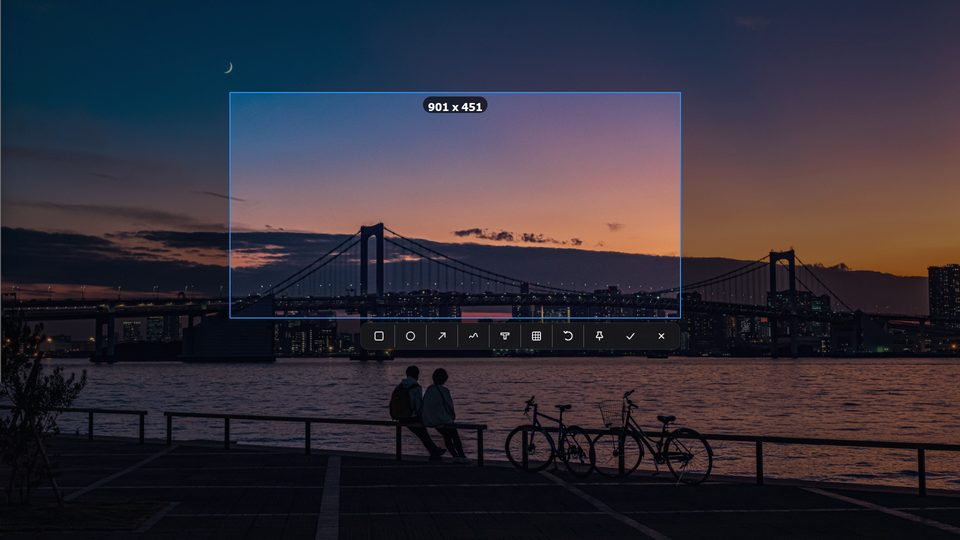
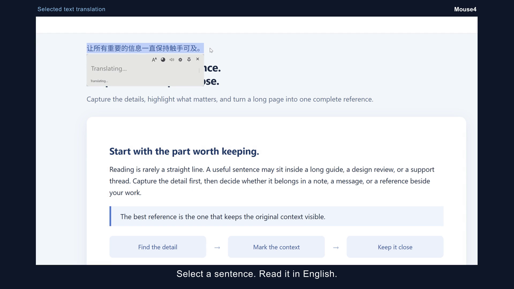

Capture instantly
Press the hotkey and drag a region, or use Long Capture to collect a scrolling page into one image. Confirm to copy and save.
Capture, translate, keep moving
Mouse4 keeps the useful parts of a Windows workflow close: clean region capture, long-page stitching, selected-text translation, and a reference you can pin without opening a heavy editor.


Ready to capture Drag a region Pinned to your desktop Translate selected textThe useful parts
Press the hotkey and drag a region, or use Long Capture to collect a scrolling page into one image. Confirm to copy and save.
Keep an important screenshot visible while you work. Drag it, zoom it, or close it when you are done.
Every capture is copied to the clipboard and saved as a timestamped local PNG in one step.
Select text, press the shortcut, and get a readable floating translation panel with copy, read aloud, font size, opacity, pin, settings, and close controls.
Double-click empty space in File Explorer to return to the previous folder without reaching for the Back button.
See the workflow
Region capture, annotation, long-page stitching, desktop pinning, and selected-text translation in one short workflow. The demo uses real Mouse4 footage.
How it works
Bring Mouse4 up whenever you need it.
Select exactly what matters. Nothing more.
Use the result immediately, read it aloud, find it later, or keep it floating above your desktop.
Simple, honest pricing
Use every feature for 14 days. When you are ready, pay once and keep Mouse4 for the life of the product.
One-time payment · No recurring charges
One key activates up to three computers. License key delivery is handled manually after payment confirmation.Questions, answered
Click Download free trial to download the latest Windows Setup installer directly. Release notes are available separately.
No. Mouse4 is a one-time lifetime purchase with no recurring charges.
One license can be activated on up to three computers.
Stripe or PayPal collects your checkout email. After payment is confirmed, the key is generated and sent to that email address.
No. Captures are processed and saved locally by the Windows app.
Yes. Use Pin to desktop to keep a capture above other windows while you work.
Yes. Select the page area, choose Long Capture, scroll through the content, then confirm to save and copy one stitched image.
Select text in a supported Windows application and press the translation shortcut. Mouse4 shows the result near the selection with controls for copy, reading, font size, opacity, pinning, settings, and close.
Yes. The translation-only settings page lets you enter the provider, service URL, model, and API key. The key is stored locally using Windows user encryption.